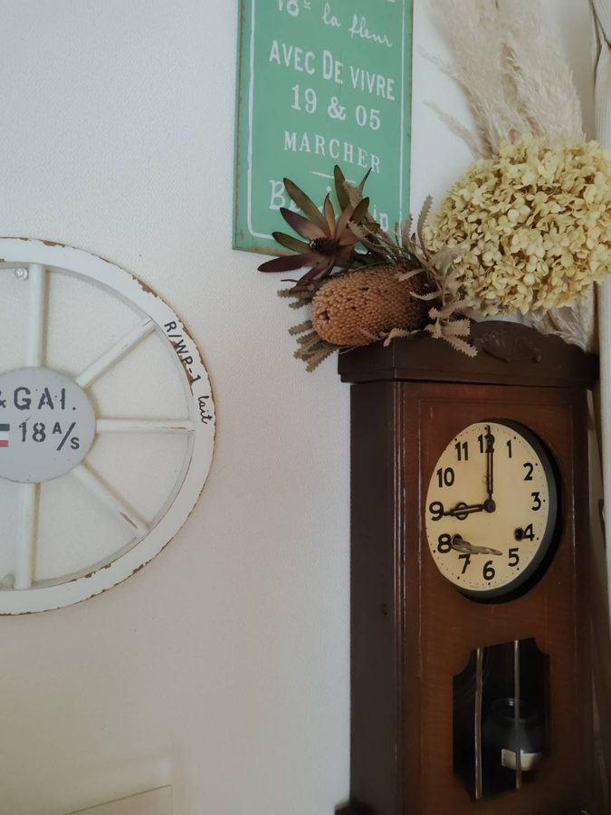
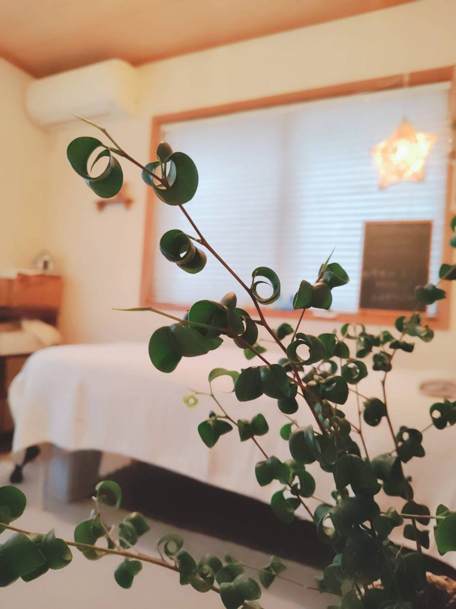
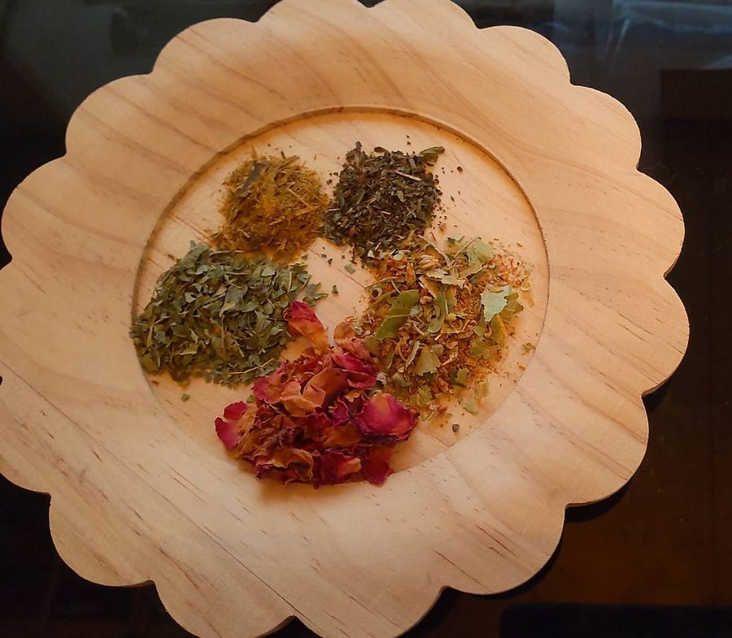
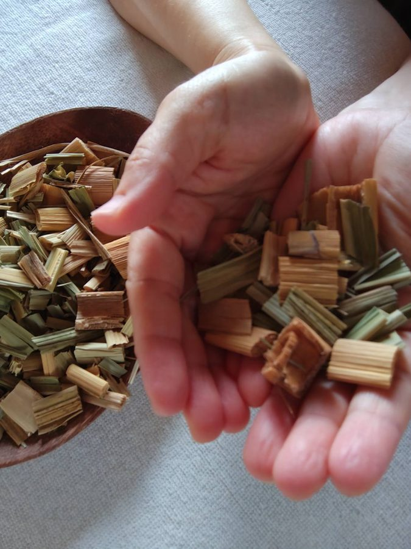
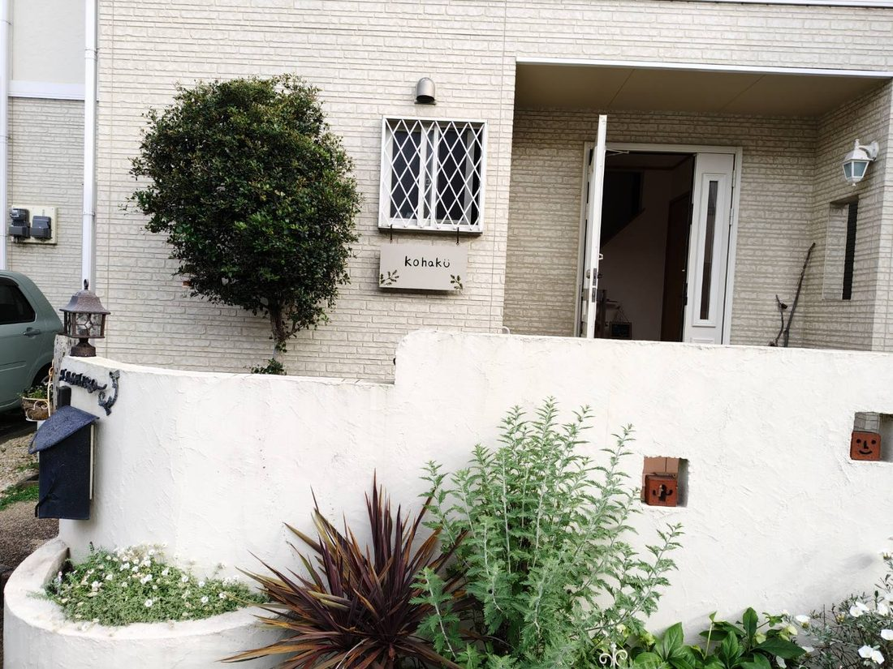

For you
こんな不調、ありませんか？
- 朝起きても疲れがとれない
- 以前より疲れやすくなった
- 肩や首がいつも重い
- 手足が冷えやすい
- むくみやすくなった
- 眠りが浅い・夜中に目が覚める
- なんとなく体が重だるい
- 肌の乾燥やくすみが気になる
- 以前より痩せにくくなった
- 気持ちまで疲れているように感じる
「年齢だから仕方ない」
そう思って諦めてしまう前に。
心と体をゆるめ、温め、
巡りを整えることから
もう一度、自分の体と向き合ってみませんか？
若い頃は、多少無理をしても
寝れば元気になっていた。
でも、40代後半、50代60代と年齢を重ねていくと
「なんとなく調子が戻らない」
「疲れがずっと残っている」
「以前と同じように動いているのに、体が重い」
お客様のお話を伺うと、そんな変化を感じる方が多くいらっしゃいます。
これまで家族のこと、仕事のこと、
周りの人のことを優先してきたからこそ、
これからは少しずつ
自分の体にも目を向けてあげる時間を。
美容だけではなく、
これから先も心地よく過ごすための
健康づくりとしてのケアを始めてみませんか？
Therapist
自己紹介
はじめまして。
アロマサロン琥珀の田代真弓です。
少しだけ、私のことを
お話させてください。
セラピストとして歩み始めて、
2026年で12年目になります。
3人の子育てをしながら、自宅サロンを続けてきました。
子どもたちも成人を迎え、
これからは少しずつサロンの時間を増やしながら、
今まで以上にお一人おひとりの
心と体に寄り添えるサロンにしていきたいと思っています。
私がサロンを続けている理由
仕事に、家事に、家族のこと。
毎日、誰かのために頑張っている女性は
本当にたくさんいます。
でも、ふと思うことがあります。
「自分を癒すために
時間を使っている人は、どのくらいいるんだろう？」
頑張ることには慣れているのに、
なぜか休むことは苦手。
「まだ大丈夫」
「これくらい頑張らないと」
「私がやらなきゃ」
そうやって、いつも自分のことを
後回しにしてしまう。
私自身も、以前は頑張りすぎてしまうタイプでした。
8年前、突然、難病の診断を受け、
その後2年間、通院を繰り返す日々を過ごしました。
原因がはっきりしない病気ですが、
医師からストレスも一因になり得ると説明を受けたことをきっかけに、
「もっと自分の心と体を大切にしよう」
と、生活を見直すようになりました。
食事、睡眠、運動。
そして、頑張りすぎないこと。
今では症状を感じることなく、
何年も過ごすことができています。
この経験があったから、思うこと。
「まだ大丈夫」と頑張り続けるのではなく、
大きく崩れる前に、自分を大切にすること。
心と体は、切り離して考えることはできません。
疲れているときは、心まで余裕がなくなったり、
心が張りつめていると、体まで力が抜けなくなったり。
だから琥珀サロンでは、
香りでゆるむ。
温める。
巡らせる。
五感を心地よく刺激しながら、
心と体がふっと緩む時間を
大切にしています。
これからの人生を
心地よく過ごすための場所。
ここに来たら、ふっと力が抜けて
心も体も軽くなる。
誰かのために頑張る自分から少し離れて、
「自分に戻る時間」
を過ごしてほしい。
そしてお帰りになれるときには、
「私も、自分を大切にしていいんだ」
そう思っていただける場所でありたいと
思っています
FLOW
ご来店の流れ
- ウェルカムティー季節のハーブティーをどうぞ。
- カウンセリングお客様の状態をお聞きして、こちらで記入させていただきます。
- お着替え・足浴蒸しのないメニューには足浴があります。
- 施術心と体を休めて、ゆっくりお過ごしください。
- お着替え施術のあと、お着替えをお願いします。
- お茶の時間よもぎ茶と茶菓子をご用意しています。


Commitment
サロンのこだわり
琥珀サロンでは品質を大切に考えています。
- 蒸しで使う野草は農家さんが大切に育てられた国産の香り高いよもぎや真菰です。
真菰（まこも）蒸しは、水の浄化力のある神聖な草として古来より大切にされてきました。
なかなか受けられる所が少ないので
是非、琥珀サロンで受けていただきたい
野草蒸しです。 - 効率よく温まる蒸し方を取り入れて体の芯まで温まっていただきます。
- 水はガイヤの水を使っています。
しっかり水道水を浄化してくれるポットで野草蒸しの途中に水分補給していただいたり、野草を蒸すお水にも使っています。 - マントは環境に優しい素材で作られていて、熱をしっかり逃さない生地です。
- トリートメントオイルは化粧品登録されたオイルでキャリアオイルの中に精油を閉じ込めて香りが飛ぶのを防ぐ製法で作られています。
オイルトリートメント後はジェルクリームを重ねて付けオイルの作用を高めます。 - 他にも空間ごとの香りの違いなど、お客様が五感を楽しむを意識しています。
NOTICE
ご予約前にご確認ください
キャンセルについて
当日キャンセルの場合、キャンセル料は一律¥3,500です。2週間以内にご予約を変更いただく場合は、キャンセル料は発生しません。
ご体調・ご持病について
- ご持病のある方、通院中の方は、担当医にご相談の上ご予約ください。
- てんかん・心疾患・ペースメーカー等体内に金属類がある方、体調不良の方は、お受けできません。
アレルギーのある方へ
よもぎやキク科などのアレルギーをお持ちの方には、クマザサ蒸しをご案内しています。アレルギーについてご不安があれば、ご予約時の備考欄にご記入ください。
蒸しをご希望の方へ
- 妊娠の可能性がある時期は、蒸しをお受けできません。
- 妊活中の方は、低温期に蒸しを行います。
- 授乳中の方は、ハーブなしで薬草蒸しを行います。
- 生理中は、蒸しをお控えください。
お車でお越しの方
駐車場があります(1台のみ)。
FAQ
よくある質問
予約は必要ですか?
完全予約制です。予約サイト、公式LINE、InstagramのDMからご連絡いただけます。
営業日と営業時間を教えてください。
不定休です(土日に営業することもあります)。営業時間は10:00〜17:00、最終受付は15:00です。営業日は予約サイトのカレンダーでご確認ください。
来店からお帰りまで、どのくらい時間がかかりますか?
カウンセリング、足浴(蒸しのないメニュー)、お着替え、お茶の時間などで、メニューの時間とは別に30分~1時間前後お時間をいただいています。お時間に余裕がない場合は、事前にお知らせください。
男性も利用できますか?
女性専用のプライベートサロンです。
車で行けますか?
駐車場があります(1台のみ)。
キャンセルしたい場合は?
当日キャンセルは一律¥3,500です。2週間以内にご予約を変更いただく場合は、キャンセル料はかかりません。
妊娠中・授乳中・生理中でも蒸しは受けられますか?
妊娠の可能性がある時期はお受けできません。授乳中はハーブなしの薬草蒸し、生理中はお控えください。妊活中の方は低温期に行います。
ACCESS
アクセス・ご予約

- サロン名
- 琥珀(こはく)
- 所在地
- 兵庫県姫路市大津区天神町2丁目176-10
- 営業時間
- 10:00〜17:00(最終受付 15:00)
- 営業日
- 不定休(予約サイトのカレンダーでご確認ください)
- その他
- 女性専用・完全予約制・駐車場あり(1台のみ)